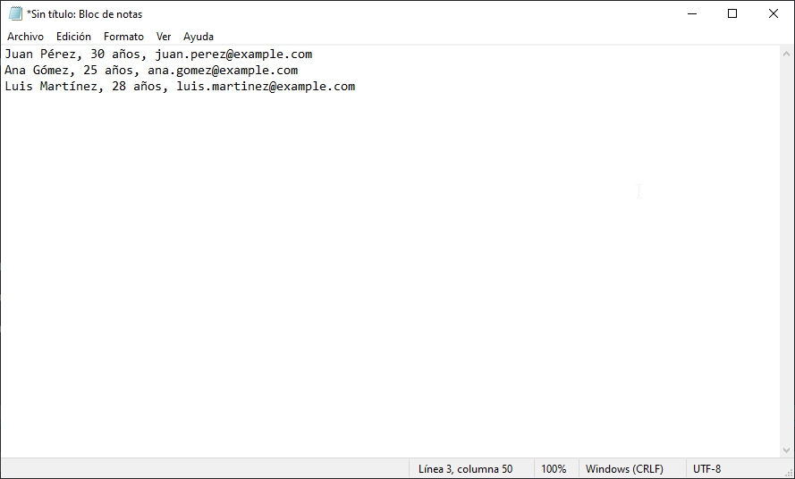
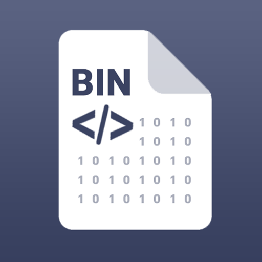
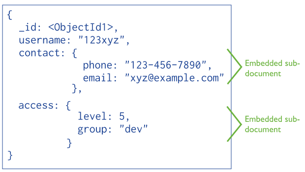
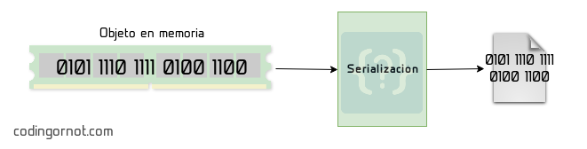

13 Persistencia
La persistencia de datos es el proceso de almacenar información para que permanezca disponible incluso después de que finaliza la ejecución de un programa. En Java, la persistencia se puede implementar utilizando diversos métodos como: - archivos - bases de datos - frameworks avanzados como Hibernate.
Esta unidad se enfoca en los fundamentos de la persistencia, utilizando archivos como medio para almacenar y recuperar información.
Objetivos de Aprendizaje - Entender qué es la persistencia de datos y por qué es importante. - Aprender a escribir y leer datos desde un archivo utilizando Java. - Conocer las diferencias entre persistencia en texto y persistencia binaria. - Introducir el concepto de serialización para manejar objeto
13.0.0.1 Métodos de Persistencia en Java
Dentro de los métodos en los cuales se puede realizar la persistencia son:
Archivos de Texto: Los datos se almacenan en formato legible para los humanos, contiene información estructurada simple, utilizada comúnmente para configuraciones o logs.

Archivos Binarios: Los datos se almacenan en formato binario, lo que es más eficiente pero no legible para los humanos, Útil para manejar grandes cantidades de datos o estructuras complejas.

Bases de Datos: Los datos se almacenan y administran usando sistemas de gestión de bases de datos (SQL o NoSQL). Útil para aplicaciones empresariales o de gran escala.

Serialización: La serialización es un proceso mediante el cual podemos convertir objetos de un programa en ejecución en flujos de bytes capaces de ser almacenados en dispositivos, bases de datos o de ser enviados a través de la red y, posteriormente, ser capaces de reconstruirlos en los equipos donde sea necesario.

13.0.0.2 Ejemplo de Persistencia con Archivos de Texto
Para la escritura de archivo se hace uso de las librerías java.io.FileWriter , al utilizar la persistencia de datos se hace uso de una excepción verificada por ende es necesario impotar la librería java.io.IOException.
Una vez importado las librerías instanciamos un objeto de la clase FileWriter con el siguiente comando
FileWriter escritor = new FileWriter("datos.txt")para escribir la información del documento hacemos uso de la línea
escritor.write(datos);Estructura del código
librerías
public class Main{
public static void main (String[] args) {
String información = "Información que el archivo contiene";
try(FileWriter escritor = new FileWriter("datos.txt")){
escritor.write(datos);
System.out.println("Datos escritos correctamente.");
}catch(IOException e){
System.out.println("el error es:" + e);
}
}
}porqué FileWriter escritor = new FileWriter(“datos.txt”), está dentro del try?
El bloque try-with-resources permite declarar y usar recursos que necesitan ser cerrados automáticamente al finalizar el bloque try. Un recurso es cualquier objeto que implementa la interfaz AutoCloseable, como FileWriter, BufferedReader, FileOutputStream, etc.
Cuando usas un recurso dentro de los paréntesis del try, Java se asegura de cerrarlo automáticamente al salir del bloque, independientemente de si ocurre una excepción o no. Esto elimina la necesidad de cerrar manualmente el recurso con un finally.
quedando un código final como el siguiente:
import java.io.FileWriter;
import java.io.IOException;
public class EscribirArchivo {
public static void main(String[] args) {
String datos = "Nombre: Juan Pérez\nEdad: 30\nOcupación: Ingeniero";
try (FileWriter escritor = new FileWriter("datos.txt")) {
escritor.write(datos);
System.out.println("Datos escritos correctamente.");
} catch (IOException e) {
System.out.println("Error al escribir el archivo: " + e.getMessage());
}
}
}Ejemplo 2
import java.io.FileWriter;
import java.io.IOException;
public class EscribirArchivo {
public static void main(String[] args) {
// Texto extenso con saltos de línea
String resumen = "El lenguaje de programación Java es una de las tecnologías más utilizadas\n"
+ "en el desarrollo de aplicaciones, tanto en la industria como en la academia.\n"
+ "Es conocido por su portabilidad, robustez y soporte para la programación\n"
+ "orientada a objetos, lo que lo convierte en una opción ideal para una amplia\n"
+ "variedad de proyectos, desde aplicaciones empresariales hasta videojuegos.";
try (FileWriter escritor = new FileWriter("resumen.txt")) {
escritor.write(resumen);
System.out.println("Resumen escrito correctamente en el archivo.");
} catch (IOException e) {
System.out.println("Error al escribir en el archivo: " + e.getMessage());
}
}
}13.0.0.3 Leer Datos desde un Archivo
Para leer datos de un archivo hacemos uso de las siguientes librerías:
BufferedReader: Esta librería que utilizamos en el módulo 8 de la lectura y escritura de datos por consola nos permite leer una gran cantidad de datos y grabarlos en una variable.
FileReader: Leer las líneas de un archivo.
IOException: Permite manejar excepciones ya que si recordamos la manipulación de archivos son excepciones verificadas por lo que hay que indicar que sucedería en caso que no exísta el archivo que queremos leer.
Para leer un archivo, necesitamos instanciar la clase BufferedReader, a la cual le pasaremos como parámetro un objeto de tipo FileReader, indicando el archivo que queremos leer. Esto se logra con el siguiente comando:
try (BufferedReader lector = new BufferedReader(new FileReader("datos.txt)))El código anterior nos permite leer la primera línea del archivo. Para leer todas las líneas del documento, es necesario utilizar un bucle que recorra el archivo hasta el final, imprimiendo cada línea. Esto se logra con el siguiente fragmento:
String linea;
while ((linea = lector.readLine()) != null) {
System.out.println(linea);
}Quedando como resultado el siguiente código.
import java.io.FileReader;
import java.io.BufferedReader;
import java.io.IOException;
public class LeerArchivo {
public static void main(String[] args) {
try (BufferedReader lector = new BufferedReader(new FileReader("datos.txt"))) {
String linea;
while ((linea = lector.readLine()) != null) {
System.out.println(linea);
}
} catch (IOException e) {
System.out.println("Error al leer el archivo: " + e.getMessage());
}
}
}13.0.0.4 Serialización
La serialización es el proceso de convertir un objeto en una secuencia de bytes. Este proceso permite almacenar el estado de un objeto en un archivo, base de datos u otro medio, o transmitirlo a través de una red. Posteriormente, mediante la deserialización, se puede reconstruir el objeto original a partir de esos bytes.
13.0.0.5 ¿Para Qué Sirve?
Persistencia: Guardar el estado de un objeto para su uso posterior.
Transmisión de Datos: Enviar objetos a través de redes, por ejemplo, en aplicaciones cliente-servidor.
Clonación: Crear copias exactas de objetos.
13.0.1 Librerías Necesarias
Para implementar serialización en Java, usaremos las siguientes librerías estándar:
java.io.SerializableEsta es una interfaz de marcado, lo que significa que no tiene métodos. Simplemente indica que una clase puede ser serializada.
Todas las clases que desees serializar deben implementarla.
java.io.FileOutputStreamEsta clase se utiliza para escribir datos en un archivo.
En el contexto de la serialización, sirve como flujo base para guardar los bytes serializados en un archivo.
java.io.ObjectOutputStreamPermite convertir un objeto en una secuencia de bytes y escribirlo en un flujo de salida (como un archivo o un socket).
Es esencial para realizar la serialización de objetos.
java.io.FileInputStreamEsta clase permite leer datos desde un archivo.
En el contexto de la deserialización, sirve como flujo base para leer los bytes del archivo donde se guardó el objeto.
java.io.ObjectInputStreamPermite convertir una secuencia de bytes en un objeto y reconstruir su estado original.
Es esencial para realizar la deserialización de objetos.
java.io.IOException- Excepción lanzada cuando ocurre un error de entrada/salida, como cuando el archivo no existe o no puede ser leído.
java.lang.ClassNotFoundException- Excepción lanzada durante la deserialización si la clase del objeto no se encuentra en el entorno de ejecución.
13.0.2 Descripción de las Líneas del Código
13.0.2.1 Serialización
try (FileOutputStream fileOut = new FileOutputStream("persona.ser");
ObjectOutputStream out = new ObjectOutputStream(fileOut)) {
// FileOutputStream:Abre o crea un archivo llamado persona.ser para escribir los datos serializados.
// ObjectOutputStream: Convierte el objeto en una secuencia de bytes y lo guarda en el archivo persona.ser.out.writeObject(persona);
//Serializa el objeto persona y lo guarda en el archivo.13.0.2.2 Deserialización
try (FileInputStream fileIn = new FileInputStream("persona.ser");
ObjectInputStream in = new ObjectInputStream(fileIn)) {
// FileInputStream:Abre el archivo persona.ser para leer los datos.
//ObjectInputStream:Reconstruye el objeto desde la secuencia de bytes leída del archivo.Persona persona = (Persona) in.readObject();
// Lee los bytes del archivo y los convierte de nuevo en un objeto.
//(Persona): Realiza un cast para convertir el objeto leído a su tipo original (Persona).13.0.3 Código Completo
13.0.3.1 Clase Persona
import java.io.Serializable;
public class Persona implements Serializable {
private String nombre;
private int edad;
// Constructor
public Persona(String nombre, int edad) {
this.nombre = nombre;
this.edad = edad;
}
// Métodos Getter
public String getNombre() {
return nombre;
}
public int getEdad() {
return edad;
}
// Método toString para mostrar el objeto en texto legible
@Override
public String toString() {
return "Nombre: " + nombre + ", Edad: " + edad;
}
}13.0.3.2 Serialización
import java.io.FileOutputStream;
import java.io.ObjectOutputStream;
import java.io.IOException;
public class SerializarPersona {
public static void main(String[] args) {
// Crear un objeto Persona
Persona persona = new Persona("Juan Pérez", 30);
// Serializar el objeto a un archivo
try (FileOutputStream fileOut = new FileOutputStream("persona.ser");
ObjectOutputStream out = new ObjectOutputStream(fileOut)) {
// Escribir el objeto persona en el archivo
out.writeObject(persona);
System.out.println("El objeto ha sido serializado y guardado en persona.ser");
} catch (IOException e) {
System.out.println("Error al serializar el objeto: " + e.getMessage());
}
}
}13.0.3.3 Deserialización
import java.io.FileInputStream;
import java.io.ObjectInputStream;
import java.io.IOException;
import java.lang.ClassNotFoundException;
public class DeserializarPersona {
public static void main(String[] args) {
// Deserializar el objeto desde el archivo
try (FileInputStream fileIn = new FileInputStream("persona.ser");
ObjectInputStream in = new ObjectInputStream(fileIn)) {
// Leer el objeto del archivo
Persona persona = (Persona) in.readObject();
System.out.println("El objeto deserializado es:");
System.out.println(persona);
} catch (IOException e) {
System.out.println("Error al deserializar el objeto: " + e.getMessage());
} catch (ClassNotFoundException e) {
System.out.println("Clase no encontrada: " + e.getMessage());
}
}
}13.0.4 Main
13.0.5 Salida Esperada
Serialización: El objeto ha sido serializado y guardado en persona.ser
Deserialización:
El objeto deserializado es: Nombre: Juan Pérez, Edad: 30